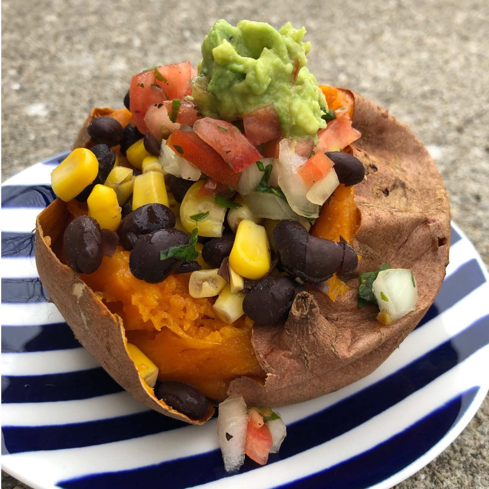

Vegan Stuffed Sweet Potatoes

Ingredients
- 4 sweet potatoes
- Can of black beans, drained and rinsed
- Can of corn
- 4-6 roma tomatoes
- 1/2 red onion
- 3 tablespoons cilantro
- 2 limes
- Salt and pepper to taste
- 2-3 avocados
- 1/4 tsp. onion powder
- 1/4 tsp. garlic powder
Instructions
- Preheat oven to 450ºF.
- Pierce potatoes with a fork 5-10 times per potato. Place on baking sheet and cook for 45-50 minutes, until soft.
- To prepare the salsa, dice tomatoes and onion. Transfer to a bowl. Chop cilantro and add to bowl as well. Add juice from limes and salt and pepper to taste. Mix together and set aside.
- To prepare the guacamole, scoop avocado into a bowl and mash. Add onion powder, garlic powder, salt, pepper, and 1/3 of the salsa mix. Mix well and set aside.
- In a saucepan, mix contents of corn can and rinsed black beans together. Heat on medium-high until warmed.
- Remove potatoes from oven. Once slightly cooled (enough to handle) cut in half, stopping halfway so the potatoes are still in tact. Mash the center of potato.
- Top mashed sweet potato with corn and beans, then salsa, then guacamole. Enjoy!
Original Source: Savor and Savvy